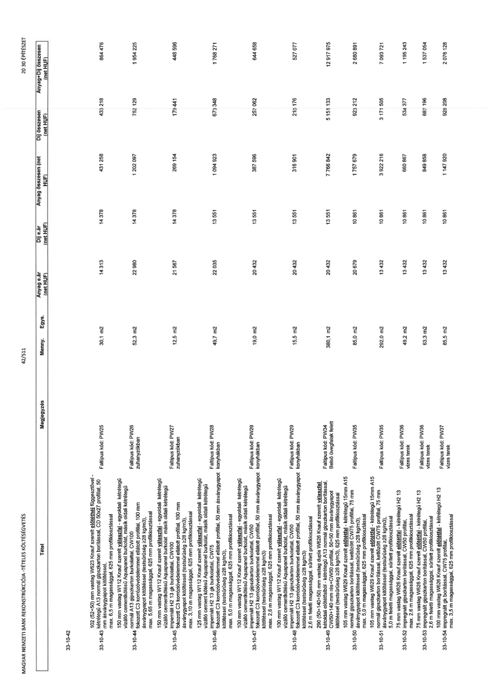

| Tétel | Megjegyzés | Menny. | Egys. | Anyag e.ár (net HUF) | Díj e.ár (net HUF) | Anyag összesen (net HUF) | Díj összesen (net HUF) | Anyag+Díj összesen (net HUF) |
|---|---|---|---|---|---|---|---|---|
| 33-10-43 | 102 (52+50) mm vastag W623 Knauf szerelt előtétfal függesztővel - kétrétegű A13 normál gipszkarton borítással, CD 60x27 profillal, 50 mm ásványgyapot kitöltéssel, max 6,5 m magassággal, 625 mm profilkiosztással. Faltípus kód: PW25 | 30,1 | m2 | 14 313 | 14 378 | 431 258 | 433 218 | 864 476 |
| 33-10-44 | 150 mm vastag W112 Knauf szerelt válaszfal - egyoldali kétrétegű vízálló cementkötésű Aquapanel burkolattal, másik oldali kétrétegű normál A13 gipszkarton burkolattal, CW100 fokozott C3 korrózióvédelemmel ellátott profillal, 100 mm ásványgyapot kitöltéssel (testsűrűség ≥28 kg/m3), max 5,65 m magassággal, 625 mm profilkiosztással. Faltípus kód: PW26 zuhanyzókban | 52,3 | m2 | 22 980 | 14 378 | 1 202 097 | 752 129 | 1 954 225 |
| 33-10-45 | 150 mm vastag W112 Knauf szerelt válaszfal - egyoldali kétrétegű vízálló cementkötésű Aquapanel burkolattal, másik oldali kétrétegű impregnált H2 13 gk burkolattal, CW100 fokozott C3 korrózióvédelemmel ellátott profillal, 100 mm ásványgyapot kitöltéssel (testsűrűség ≥28 kg/m3), max. 3,10 m magassággal, 625 mm profilkiosztással. Faltípus kód: PW27 zuhanyzókban | 12,5 | m2 | 21 567 | 14 378 | 269 154 | 179 441 | 448 596 |
| 33-10-46 | 125 mm vastag W112 Knauf szerelt válaszfal - egyoldali kétrétegű vízálló cement kötésű Aquapanel burkolat, másik oldali kétrétegű impregnált H2 13 gk burkolattal, CW75 fokozott C3 korrózióvédelemmel ellátott profillal, 50 mm ásványgyapot kitöltéssel (testsűrűség ≥28 kg/m3), max. 5,0 m magassággal, 625 mm profilkiosztással. Faltípus kód: PW28 konyhákban | 49,7 | m2 | 22 035 | 13 551 | 1 094 923 | 673 348 | 1 768 271 |
| 33-10-47 | 100 mm vastag W112 Knauf szerelt válaszfal - egyoldali kétrétegű vízálló cementkötésű Aquapanel burkolat, másik oldali kétrétegű impregnált H2 13 gipszkarton burkolattal, CW50 fokozott C3 korrózióvédelemmel ellátott profillal, 50 mm ásványgyapot kitöltéssel (testsűrűség ≥28 kg/m3), max. 2,6 m magassággal, 625 mm profilkiosztással. Faltípus kód: PW29 konyhákban | 19,0 | m2 | 20 432 | 13 551 | 387 596 | 257 062 | 644 658 |
| 33-10-48 | 100 mm vastag W112 Knauf szerelt válaszfal - egyoldali kétrétegű vízálló cementkötésű Aquapanel burkolat, másik oldali kétrétegű impregnált H2 13 gipszkarton burkolattal, CW50 fokozott C3 korrózióvédelemmel ellátott profillal, 50 mm ásványgyapot kitöltéssel (testsűrűség ≥28 kg/m3), 2,6 m feletti magassággal, sűrített profilkiosztással. Faltípus kód: PW29 konyhákban | 15,5 | m2 | 20 432 | 13 551 | 316 901 | 210 176 | 527 077 |
| 33-10-49 | 290 (50+140+50) mm vastag dupla W626 Knauf szerelt válaszfal, kétoldali előtétfalból - kétoldalt kétrétegű A13 normál gipszkarton borítással, CW50+140 mm rés+CW50 profillal, 50+50 mm ásványgyapot kitöltéssel (testsűrűség ≥28 kg/m3), 625 mm profilkiosztással. Faltípus kód: PW34 Belső üvegfalak felett | 380,1 | m2 | 20 432 | 13 551 | 7 766 842 | 5 151 133 | 12 917 975 |
| 33-10-50 | 105 mm vastag W629 Knauf szerelt előtétfal - kétrétegű 15mm A15 normál gipszkarton borítással, kettőzött CW75 profillal, 75 mm ásványgyapot kitöltéssel (testsűrűség ≥28 kg/m3), max. 5,0 m magassággal, 625 mm profilkiosztással. Faltípus kód: PW35 | 85,0 | m2 | 20 679 | 10 861 | 1 757 679 | 923 212 | 2 680 891 |
| 33-10-51 | 105 mm vastag W629 Knauf szerelt előtétfal - kétrétegű 15mm A15 normál gipszkarton borítással, kettőzött CW75 profillal, 75 mm ásványgyapot kitöltéssel (testsűrűség ≥28 kg/m3), 5,0 m feletti magassággal, sűrített profilkiosztással. Faltípus kód: PW35 | 292,0 | m2 | 13 432 | 10 861 | 3 922 216 | 3 171 505 | 7 093 721 |
| 33-10-52 | 75 mm vastag W626 Knauf szerelt előtétfal - kétrétegű H2 13 ásványgyapot kitöltéssel (testsűrűség ≥28 kg/m3), 5,0 m feletti magassággal, sűrített profilkiosztással. Faltípus kód: PW36 vizes terek | 49,2 | m2 | 13 432 | 10 861 | 660 867 | 534 377 | 1 195 243 |
| 33-10-53 | 75 mm vastag W626 Knauf szerelt előtétfal - kétrétegű H2 13 impregnált gipszkarton borítással, CW50 profillal, 2,6 m feletti magassággal, sűrített profilkiosztással. Faltípus kód: PW36 vizes terek | 63,3 | m2 | 13 432 | 10 861 | 849 858 | 687 196 | 1 537 054 |
| 33-10-54 | 100 mm vastag W626 Knauf szerelt előtétfal - kétrétegű H2 13 impregnált gipszkarton borítással, CW75 profillal, max. 3,5 m magassággal, 625 mm profilkiosztással. Faltípus kód: PW37 vizes terek | 85,5 | m2 | 13 432 | 10 861 | 1 147 920 | 928 208 | 2 076 128 |
